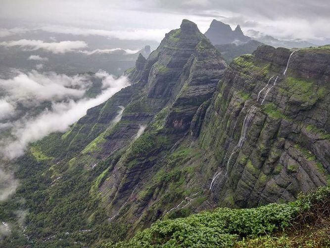

Harishchandragad Fort
Harishchandragad Fort
Location: Ahmednagar district of India
Elevation: 1,422 m
Mountain range: Western Ghats
Best Time to Visit: Monsoon ( also Pre and Post monsoon ), Winter
Description:
Harishchandragad, a hill fort in the Ahmednagar district of Maharashtra, is one of the most challenging treks in the Western Ghats.
This hill fort can be approached from multiple routes.
The fort originally dates back to the 6th century during the rule of Kalchuri dynasty. The citadel was built during this era and various caves probably have been carved out in the 11th century AD.
Sage Changdev used to meditate here in 14th century AD. Later the fort was under the control of Mughals and Marathas captured it in 1747 AD. Remnants of Microlithic human inhabitants have been discovered here. The various Puranas like Matsyapurana, Agnipurana and Skandapurana have many references about Harishchandragad.
How to Reach Harishchandragad
Harishchandragad Route Information: There are 3 popular ways to get to the Harishchandragad Fort. One via Khireshwar Village, via Nalichi Vaat [Extremely difficult] and the easiest one via Pachnai Village.
1. Khireshwar village route:
The Khireshwar village route to Harishchandragad is the one that most people prefer as it offers a lot of scenic beauty while trekking. But this route is also a bit time consuming.
Harishchandragad Distance From Pune: 170 Kms
Harishchandragad Distance From Mumbai: 210 kms
From Pune District: There is a daily bus from Shivajinagar ST stand (Pune) to Khireswar village.
2. Via Pachnai Village:
The trek route with Pachnai as the base is the easiest way up
The route to Pachnai
Pune - Nasik Phata - Narayangaon - Junnar - Otur - Brahmanwada - Kotul - Vihir - Pachnai.
3. Nalichi Vaat:
One such route via Nalichi Vaat (which translates to ‘passage through a gorge’) is a channel that lies to the extreme right of the mountain. It is the most difficult path to the top. Popular among climbers and experienced trekkers, Nalichi Vaat involves a near 80 degree climb, involving steep rock patches. The trail begins on a stream bed filled with large man-sized rocks and eventually leads to the foot of the gorge.
Places to Visit
- Temple of Harishchandreshwar
This temple is marvelous example of the fine art of carving sculptures out of stones that prevailed in ancient India. It is about 16 m high from its base. Around this temple there a few caves & ancient water tanks. The river Mangal Ganga is said to originate from one of the tanks located close to the temple.
The fascinating thing about this temple is that it has been carved out from a single huge rock.
- Taramati
Also known as Taramanchi. This is the top most point on the fort (1429 meters). Leopards are seen in the forests beyond this peak. From here we can have a glimpse of the whole range of Naneghat and the forts near Murbad. From this Taramati point, we can have a glimpse of forts till Siddhagad near Bhimashankar in the south and Napta twin peaks, Ghodishep (865 meters), Ajoba (1375 meters), Kulang fort (1471 meters) in the north near the Kasara region.
- Kokan Kada
The main attraction of this hill fort remains the Konkan Kada (Konkan cliff), an almost 1,423 m concave fall. It is a vertical overhang, like a cobra’s hood, providing a panoramic view of the surrounding hills and an enchanting sunset. A little further away on the mountain is the Taramti peak, the third highest peak in Maharashtra, providing a breathtaking view of the surrounding mountain ranges and an ideal setting to bask in the golden canopy of the rising sun. The cave of Kedareshwar and the temple of Harishchandreshwar are other places around of tourist interest.
- Kedareshwar
The cave of Kedareshwar hosts a big Shivlingam, which is surrounded by water. The lingam is surrounded by four pillars that essentially represent the four yugas of life on earth. The general belief is that the current phase is the Kali Yuga. The day the fourth pillar breaks down will be considered the end of this era.
Things to Carry:
Please refer below blog where we have listed all the necessary things to carry while going for a sahyadri mountain range trek.
Some Clicks On Harioshchandragad:
